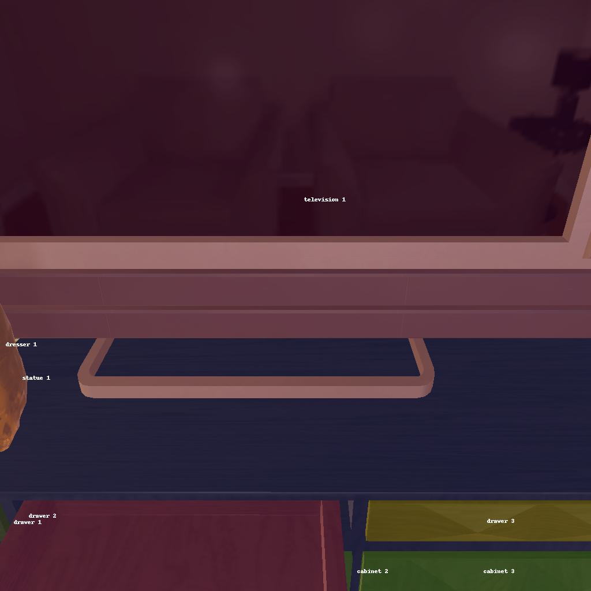

---------------------------------------------------------task: 7---------------------------------------------------------
--------------------------------------------------------------------------------------------------------------------------------------------------------------------
--------------------------------------------------------------------------------------------------------------------------------------------------------------------
Step:--------------------------------------------------------------------------5-------------------------------------------------------------------------------
----------------------------------------
VLM Prompt:
Image1:
**Instruction**
1. Analyze the provided image to identify all visible household objects, focusing on those relevant to the task description "put a creditcard in coffeetable."
2. Use the analysis of the image and the task hint "The agent must find an object of the desired type, pick it up, find the correct location to place it, and put it down there." to answer the question: what is the most reasonable action in the choices for the task description "put a creditcard in coffeetable"?
4. Decide and write the answer using the template: The answer is: (i): , where i is the real number. If there is no desired object in the image, search every place based on **Initial Observation** to find the object. And if no one is exactly correct, choose a similar answer.
**Initial Observation**
You are in the middle of a room. Looking quickly around you, you can see armchair (1-2), dresser (1), garbagecan (1), cabinet (1-4), drawer (1-4), coffeetable (1), sidetable (1), sofa (1)
**Answer Choices**
(1): go to armchair 1
(2): go to armchair 2
(3): go to garbagecan 1
(4): go to cabinet 1
(5): go to drawer 1
(6): go to cabinet 2
(7): go to drawer 3
(8): go to cabinet 3
(9): go to drawer 4
(10): go to cabinet 4
(11): go to coffeetable 1
(12): go to sidetable 1
(13): go to sofa 1
(14): take television 1 from dresser 1
(15): take statue 1 from dresser 1
(16): examine dresser 1
**Answer**
Let's think step by step by following the instructions.
----------------------------------------
----------------------------------------
Original Response:
The task is to "put a creditcard in coffeetable." From the initial observation, we can see that there is a coffeetable 1 in the room. However, the image does not show a credit card or any similar object on the visible surfaces or furniture.
Given the task, we need to find a credit card first. Credit cards are typically small, flat objects that are often stored in places like drawers or cabinets where personal items are kept.
The answer choices that involve going to storage furniture where a credit card might be found are (4): go to cabinet 1, (5): go to drawer 1, (6): go to cabinet 2, (7): go to drawer 3, (8): go to cabinet 3, (9): go to drawer 4, and (10): go to cabinet 4.
Since none of these actions directly state "take credit card," we must first search for it. Therefore, the most reasonable action would be to go to one of these storage furniture pieces and search for the credit card.
Since drawer 1 is the first storage option listed and drawers are a common place to store such items, it seems like a logical place to start the search.
The answer is: (5): go to drawer 1.
----------------------------------------
----------------------------------------
>>> Refine Original VLM Response and Get Pure Action: go to drawer 1
----------------------------------------
-----------------------------------------------------------------
Running time: 9.051974773406982 seconds
Total Money: 2.0899300000000003
-----------------------------------------------------------------
-----------------------------------------------------------------
Text Observation:You arrive at loc 5. The drawer 1 is closed.
-----------------------------------------------------------------
UNSUCCEED